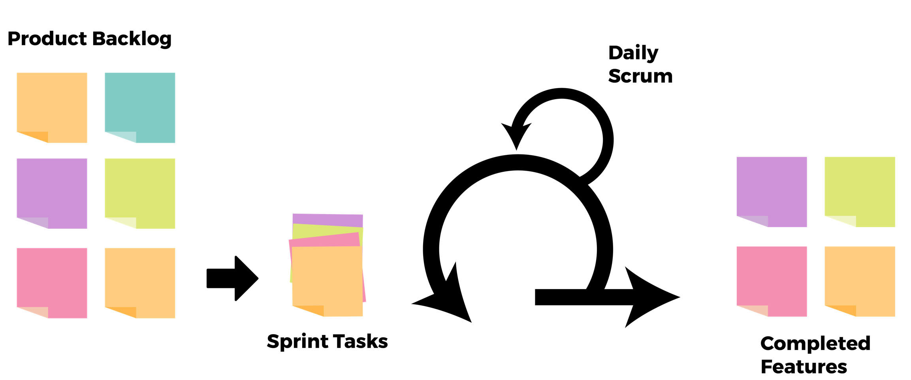

Agile Development Process
We Use Scrum Methodology to implement Agile development.
How Scrum Works
01
Identification of a particular set of features by the product owner for each sprint which is defined in the product backlog.
02
Development team selects the top feature from the backlog which they will deliver at the end of a sprint.
03
After agreeing to do a particular feature, the feature is then broken into a smaller task which is developed by Product Owner found in the sprint backlog.
04
The sprint starts & during this, there are daily meetings where the team members provide status of their tasks and discuss the problem related to a task. Scrum master is responsible for solving the problem during these daily meetings.
05
After sprint completion, the feature is presented to the product owner for approval and review is given to team related to a feature in sprint review.
06
Finally, in retrospective meeting the team, scrum master and product owner discuss improvements in the overall process. After agreeing to do a particular feature, the feature is broken into a smaller task which is developed by product owner found in the sprint backlog.